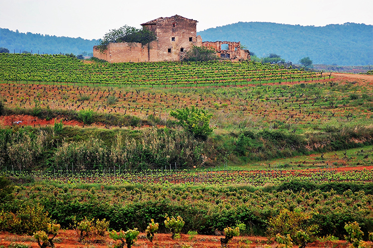
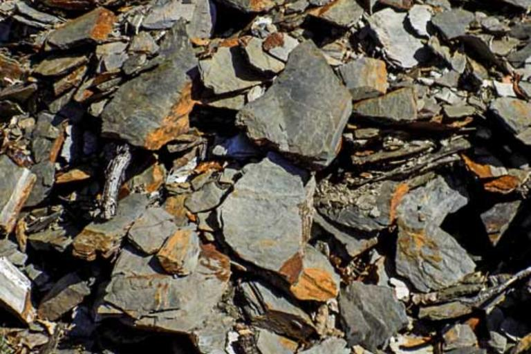
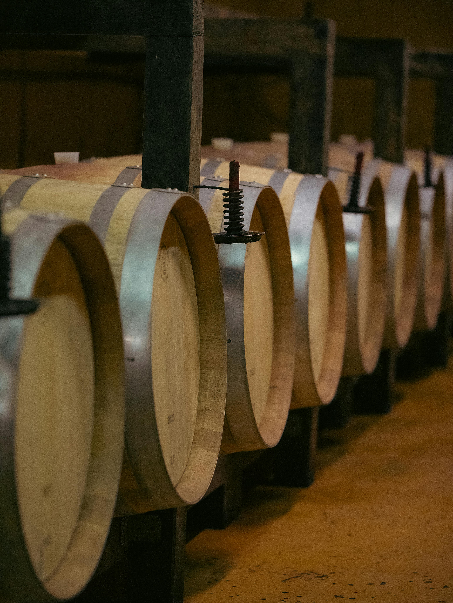
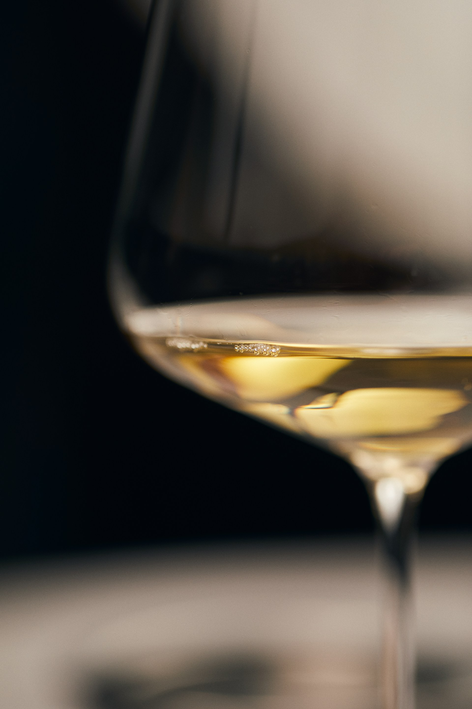

No existe «un» vino de Tarragona
Hay territorios donde el vino no es una industria, sino una consecuencia natural del lugar. La provincia de Tarragona lleva la vid en el paisaje desde hace tanto tiempo que en algunos rincones ya resulta imposible distinguir dónde termina uno y empieza la otra.
La provincia produce vinos tan distintos entre sí que un priorato de llicorella y un trepat de la Conca difícilmente pasarían por hermanos en una cata ciega. Esa diversidad no es una rareza: es la condición geográfica de un territorio donde el mediterráneo se difumina en cuanto se gana altitud, y los suelos cambian con una brusquedad que pocas regiones europeas igualan.

Dos mil años de vino, tres momentos críticos
Roma: el primer gran puerto vinícola del Mediterráneo occidental
Cuando los romanos llegaron a la Tarraco del siglo II a.C., no encontraron un territorio virgen: encontraron una viticultura ibérica ya asentada. Lo que sí aportaron fue otra cosa: la infraestructura comercial. Ánforas estandarizadas, rutas marítimas, contabilidad. El vinum tarraconense llegaba con regularidad hasta Ostia y la Galia, y los poetas latinos —Marcial, Plinio el Viejo— lo mencionaban con la naturalidad de quien describe algo habitual.
Aquella exportación masiva dejó dos huellas que todavía pesan: la vocación comercial del territorio —producir para vender fuera antes que para consumir dentro— y la plantación sistemática de viñedo en zonas que, de otro modo, no habrían tenido vid. El Camp de Tarragona debe buena parte de su identidad vitícola precisamente a esa lógica.
La filoxera francesa: la gran oportunidad envenenada
En 1863, un insecto americano —Daktulosphaira vitifoliae— aparece en el Ródano y en treinta años arrasa el viñedo europeo. Francia, el mayor productor mundial, pierde dos tercios de su superficie vitícola. Sus negociantes miran hacia el sur: Rioja, Navarra, Cataluña. Tarragona se convierte, casi sin transición, en proveedor masivo.
Las consecuencias son ambivalentes. Por un lado, capital: Reus vive décadas de prosperidad que dejan una huella modernista visible todavía en su arquitectura. Por otro, adaptación al mercado: variedades productivas, vendimia en verde para ganar grado, envío en pipas a granel. La calidad no es el objetivo; el volumen, sí. Cuando la filoxera cruza los Pirineos y arrasa también el viñedo tarraconense, la replantación se hace ya con ese criterio. Cariñena, garnacha, macabeo: robustas, rendidoras, pensadas para producir.
El siglo cooperativista y su herencia
La crisis del siglo XX —guerras, aranceles, pérdida del mercado francés— obliga a reorganizar la producción. Nacen las cooperativas agrícolas, muchas instaladas en las famosas catedrales del vino modernistas de Falset, Pinell de Brai o L'Espluga, proyectadas por discípulos de Gaudí. La cooperativa resuelve un problema real: permite sobrevivir al viticultor pequeño. Pero también consolida otro: durante décadas, la inmensa mayoría del vino tarraconense sale anónimo, a granel, sin embotellar, para alimentar mezclas vendidas con otros nombres en otras geografías.
Todo lo que ha pasado en los últimos cuarenta años en el vino de Tarragona se explica como una reacción a ese siglo anónimo.
La historia que importa para entender lo que hay en la copa hoy es la de un grupo de enólogos —Álvaro Palacios, René Barbier, Josep Lluís Pérez, Daphne Glorian, Carles Pastrana— que en los años ochenta se instalaron en el Priorat con una convicción sencilla: recuperar las viñas viejas de garnacha y cariñena sobre llicorella, vinificarlas con cuidado, embotellarlas con nombre propio. El resultado —Clos Mogador, L'Ermita, Finca Dofí, Clos Erasmus, Clos Martinet— colocó al Priorat en el mapa mundial del vino en menos de una década. Y por efecto de contagio, obligó a toda la provincia a replantearse qué quería hacer con su herencia.
Seis mundos en una sola provincia
La única DOQ catalana junto con Rioja en España. Y se nota.
El Priorat son once municipios apretados en un anfiteatro de pizarra metamórfica. Gratallops, Torroja, Porrera, Bellmunt, Poboleda… nombres que aparecen en etiquetas con creciente protagonismo desde que la DOQ permitió mencionarlos. El relieve es extremo: pendientes de hasta 60 grados, vendimia exclusivamente manual, viñas que rinden entre 5 y 20 hectolitros por hectárea —frente a los 50-80 de una DO normal— lo que explica, entre otras cosas, los precios.
El vino clásico del Priorat es tinto, garnacha-cariñena con algo de cabernet o syrah, con graduación natural alta (14,5-15,5º), crianza en madera —aunque cada vez menos nueva—, color profundo, nariz de fruta negra madura (mora, casis), notas de regaliz, tinta china, hierbas secas, y una boca con taninos presentes pero pulidos y un final mineral reconocible, a veces descrito como «salino» o «a grafito». Los blancos —garnacha blanca sobre llicorella— son una revelación más reciente pero quizás la apuesta más interesante del territorio ahora mismo: densos, estructurados, con tensión mineral y capacidad de guarda rara en blanco mediterráneo.
Para explorar: Scala Dei · Clos Mogador · Álvaro Palacios · Clos Erasmus · Mas Doix · Terroir al Límit · Costers del Siurana
El Priorat asequible, según el tópico. La verdad es más compleja.
Montsant rodea geográficamente al Priorat, pero su identidad no es periférica. Es una DO de mosaico de suelos: hay zonas con la misma llicorella del vecino (Marçà, El Masroig), zonas graníticas al norte que dan vinos muy distintos, y arcillas en las cotas bajas. Esta diversidad de terruños, combinada con precios más accesibles, ha permitido una experimentación que en Priorat —donde el peso del «estilo Priorat» es grande— ha sido más difícil.
En la copa, un Montsant joven ofrece fruta roja más fresca que el Priorat (cereza, frambuesa en lugar de mora concentrada), taninos más amables, graduación ligeramente inferior (13,5-14,5º), y una mineralidad presente pero menos dominante. Los Montsant de viña vieja y crianza larga —Acústic, Venus La Universal, Joan d'Anguera— juegan en una liga cercana al Priorat con etiquetas que rondan la mitad de precio. Los blancos —macabeo, garnacha blanca— han crecido mucho los últimos años: frescos, salinos, gastronómicos.
Para explorar: Acústic · Venus La Universal · Joan d'Anguera · Orto · Laurona · Celler de Capçanes · Mas de les Pereres
La DO más vieja de la provincia y la más heterogénea. Un territorio en plena redefinición.
La DO Tarragona es la más extensa de la provincia y la más difícil de resumir. Abarca desde el litoral del Camp —con Valls, Alió, Bràfim, Nulles— hasta la zona de Falset (que comparte territorio con Montsant) y la Ribera d'Ebre. Durante décadas fue conocida sobre todo por dos cosas: el Tarragona Clásico, un vino licoroso de tradición litúrgica —histórico proveedor de vino de misa al Vaticano— y el viñedo que alimentaba las cooperativas. El perfil de mercado masivo siempre ha pesado.
Está cambiando. Hay un movimiento de bodegas pequeñas —Adernats, Josep Foraster (en la franja con la Conca), Celler de l'Encastell, Vinyes Domènech— que trabajan la garnacha mediterránea del Camp como variedad principal. El perfil es distinto al interior: fruta roja más amable, estructura más ligera, notas herbáceas mediterráneas (tomillo, romero), graduación contenida. Los blancos basados en xarel·lo, macabeo y garnacha blanca empiezan a mostrar frescura notable cuando se vendimia pronto.
Para explorar: Adernats · Josep Foraster · Celler de l'Encastell · Vinyes Domènech · Miró · Rofes · Yzaguirre
La DO más injustamente olvidada. Y probablemente la que más te sorprenderá en una cata ciega.
La Conca es otro mundo. La altitud —media de 500 metros, con viñedo por encima de los 700— y la influencia continental cambian radicalmente el juego. Los inviernos son fríos, las amplitudes térmicas día-noche en verano son grandes, y todo eso produce uvas con acidez viva, maduración lenta y perfiles aromáticos muy distintos a los mediterráneos típicos. No por casualidad es la cuna histórica del cava: los grandes productores (Codorníu, Freixenet) se proveían tradicionalmente aquí de macabeo y parellada.
Lo interesante es el renacimiento del trepat. Variedad tinta autóctona de la zona, durante décadas se usó casi exclusivamente para dar color al cava rosado o se mezclaba en tintos sin identidad. En los últimos veinte años, un puñado de bodegas —Josep Foraster, Mas Foraster, Carles Andreu, Sanstravé— han empezado a vinificarla como variedad principal en tintos jóvenes y rosados. El resultado es una sorpresa: vinos ligeros, color cereza traslúcido, aromática floral (violeta, rosa marchita) y frutal roja (fresa, grosella), acidez cortante, alcohol contenido (12-13º). Se bebe frío, se maneja como un Pinot Noir mediterráneo.
Para explorar: Josep Foraster · Mas Foraster · Carles Andreu · Sanstravé
La capital mundial de la garnacha blanca. Literalmente.
En el extremo sur de la provincia, entre el Ebro y la frontera con Aragón, se encuentra una de las siete denominaciones históricas de Cataluña. Doce pueblos —Gandesa, Pinell de Brai, Batea, Corbera d'Ebre…— con un territorio tan alejado del mar que el clima es puramente continental: inviernos fríos, veranos tórridos, dos vientos dominantes —el cerç (del interior) y el garbí (del mar)— que condicionan la viticultura. El resultado es una producción de vinos potentes, estructurados y de alta graduación, muy distintos a los mediterráneos típicos.
Pero la gran historia de la Terra Alta es la garnacha blanca. Aquí se cultiva el 90% de toda la garnacha blanca de Cataluña y, según los cálculos actuales, cerca de un tercio de la producción mundial. La variedad ha encontrado en este suelo y este clima unas condiciones que rozan lo ideal: vinos blancos con color dorado, nariz de fruta blanca madura, hinojo y frutos secos, cuerpo medio-denso, textura casi aceitosa, acidez moderada y un final largo con ese punto amargo noble típico de la variedad. La DO ha creado incluso un sello específico —Terra Alta Garnatxa Blanca— reservado a los monovarietales de la uva con calificación mínima «muy bueno», reconocidos internacionalmente con decenas de medallas en los premios Grenaches du Monde.
Para explorar: Edetària · Herència Altés · Lafou Celler · Celler Piñol · Cooperativa de Pinell de Brai · Cooperativa de Gandesa
La DO compartida con Barcelona. 16 municipios tarragoneses en la franja norte.
El Penedès es una DO compartida entre Barcelona y Tarragona: de sus 63 municipios, 16 pertenecen a la provincia de Tarragona, situados en la franja norte del Baix Penedès y Alt Camp. Aunque el epicentro productivo está en Sant Sadurní d'Anoia y Vilafranca (ambos en Barcelona), la parte tarragonina aporta viñedo significativo y un número notable de bodegas históricas. Es una de las denominaciones más antiguas de Cataluña, creada en 1960, y una de las más diversas en cuanto a tipologías de vino.
El Penedès tiene un papel fundamental en la historia del vino catalán por una razón concreta: aquí nació el cava. La crisis de la filoxera de finales del XIX obligó a replantar todo el viñedo europeo con pies americanos, y en 1872 la casa Codorníu empezó a elaborar «vino espumoso» por el método tradicional. Sant Sadurní se convirtió en el núcleo de una industria que hoy es la más exitosa de la viticultura catalana. El cava se elabora con tres variedades clásicas: parellada (frescor y finura), macabeo (perfume y dulzura) y xarel·lo (cuerpo y estructura), y cada vez más con chardonnay en propuestas contemporáneas.
Para explorar: Torres · Jean Leon · Albet i Noya · Gramona · Recaredo · Llopart

Lo que la vid saca de la tierra
En pocos territorios europeos se concentra tanta diversidad de suelo en tan poco espacio. En apenas 80 kilómetros de norte a sur, la provincia pasa de la pizarra del Priorat al calcáreo de la Conca, del granito del Montsant norte a las arcillas del Camp. Cada uno deja su marca en la copa de una manera reconocible.
Llicorella — Priorat y parte de Montsant
Pizarra metamórfica del periodo carbonífero, formada hace unos 300 millones de años. Oscura, quebradiza, muy pobre en materia orgánica. Su comportamiento técnico tiene dos particularidades que explican los vinos: absorbe y devuelve calor —actuando como acumulador térmico que prolonga la maduración—, y obliga a la raíz a descender varios metros en busca de agua, lo que estresa a la planta y concentra el fruto. Nota de cata asociada: mineralidad seca, sensación «salina» o «a piedra mojada» en boca, final largo y austero.
Calcáreo — Camp de Tarragona, Conca, parte del Montsant
Suelos formados sobre substratos calizos del mesozoico. Blanquecinos, permeables, con pH alcalino. Permiten mayor reserva hídrica que la llicorella, lo que se traduce en vinos más amplios en boca, con menos tensión pero más volumen. La caliza se asocia tradicionalmente a la elegancia en blancos (es el suelo clásico de Chablis, Champagne o Jerez). Aquí da blancos con amplitud y tintos con fruta mediterránea madura y final ligeramente amargo.
Granito — norte del Montsant
Presente sobre todo en Montsant norte (zona de La Serra d'Almos, Marçà). Aporta una mineralidad distinta a la de la llicorella —menos austera, más floral, con notas que algunos enólogos describen como «a pedernal» o «a lana mojada» en blancos—. Los tintos sobre granito tienden a ser más esbeltos, con taninos más finos, sin la densidad opresiva que puede dar la llicorella joven.
Franco-arcilloso — Conca, partes bajas
Mezcla equilibrada de arena, limo y arcilla. Es el suelo más «fácil» para la viticultura: reserva hídrica suficiente, drenaje correcto, fertilidad moderada. Produce vinos con más redondez y menos angulosidad. Es el suelo habitual de los tintos jóvenes de la Conca y de gran parte del viñedo del Camp. No es espectacular pero es honesto: da vinos que se beben bien sin pretensiones.
Qué esperar en nariz y en boca
Dejamos los datos y entramos en la copa. Seis variedades definen el carácter vinícola de la provincia, con perfiles que cualquier buen aficionado puede aprender a reconocer después de unas cuantas botellas —y que conviene conocer antes de enfrentarse a una carta.
La variedad más plantada de la provincia y, probablemente, la que mejor expresa sus distintos terruños. Una garnacha del Priorat, del Camp y de Montsant son tres vinos reconociblemente distintos.
Fruta roja madura —fresa macerada, frambuesa, cereza—. En versiones de viña vieja: higos, ciruela pasa, especias dulces (canela, clavo). En Priorat: notas minerales y de hierbas mediterráneas secas (tomillo). Evoluciona hacia cuero y tabaco con los años.
Taninos blandos por naturaleza —no agresivos— con acidez media. Alcohol alto (suele superar 14º) que puede dar sensación cálida. Final goloso, ligeramente dulzón por la fruta madura. En viña vieja y llicorella: estructura inesperada y un punto de austeridad mineral en el final.
Variedad difícil: si se trabaja mal, produce vinos ásperos y verdes. Si se respeta —viña vieja, rendimientos bajos, maduración justa—, es capaz de una complejidad que pocas variedades mediterráneas alcanzan. Aporta lo que la garnacha no tiene: color, acidez y estructura para envejecer.
Fruta negra oscura (mora, arándano), notas terrosas, pimienta negra, hierbas silvestres. En crianzas largas: notas balsámicas, regaliz, cuero viejo. Menos expresiva que la garnacha en juventud, gana con el tiempo.
Color profundo, taninos firmes y presentes (los de cariñena son más marcados que los de garnacha), acidez alta —la más alta entre las tintas provinciales—, final largo con un punto astringente que pide crianza o guarda. Los grandes Priorats deben a la cariñena su capacidad de envejecer veinte años y más.
Única variedad estrictamente autóctona de la provincia que juega en su propia liga. Hábitat casi exclusivo: la Conca de Barberà. Perfil inesperado para un mediterráneo: ligero, floral, de acidez viva.
Fresa fresca, grosella roja, granada. Florales muy marcadas —violeta, rosa, peonía—. En rosados: notas cítricas de pomelo rosa. Aromática delicada, nunca intensa. Cercana al Pinot Noir o al Gamay en perfil general.
Color cereza traslúcido, cuerpo ligero, taninos apenas perceptibles, acidez alta y cortante, alcohol contenido (12-13º). Final fresco, casi salino. Se bebe frío (14-15º) en tinto, nunca a temperatura ambiente mediterránea. Uno de los tintos más gastronómicos y versátiles del país.

Durante décadas considerada una variedad pesada, buena solo para mezclas. La viticultura moderna —vendimia temprana, llicorella, fermentación en depósitos inertes o lías finas— ha revelado un potencial que la ha convertido en una de las grandes blancas del Mediterráneo occidental.
Fruta blanca madura (pera, manzana reineta), notas cítricas (limón maduro, pomelo), hinojo, anís. En crianza larga con lías: notas de frutos secos (avellana), miel, brioche. En Priorat sobre llicorella: mineralidad seca y notas yodadas casi marinas.
Cuerpo medio a denso, textura casi aceitosa, acidez moderada —es su punto débil comparada con un riesling—, alcohol alto (13,5-14º), final largo con un punto amargo noble (almendra, piel de cítrico). En llicorella, tensión mineral que compensa la falta de acidez fulgurante.
La variedad más neutra de la provincia. En el Camp da blancos amables y sin pretensiones. En la Conca, con altitud y vendimia temprana, muestra una cara distinta: más tensa, más cítrica, más interesante. Base habitual de los cavas.
Manzana verde, limón, flores blancas (azahar, acacia), notas herbáceas frescas. Perfil discreto, raramente intenso. En la Conca de altitud: notas minerales y un punto de «piel de almendra» característico.
Cuerpo ligero, acidez media-alta (más alta en la Conca), alcohol moderado (11,5-12,5º), final corto en versiones jóvenes, más largo y salino en las de altitud o con lías. Ideal para aperitivos, mariscos y platos ligeros.
Variedad que exige altitud para expresarse: por debajo de 400 metros pierde carácter. Aporta al cava su frescura cítrica típica. Como vino tranquilo, sola o en coupage, muestra un perfil aromático distintivo.
Fruta blanca delicada, hinojo, manzanilla, notas florales suaves. Mucho más delicada que el macabeo, menos estructurada que la xarel·lo. Su virtud es la frescura y la elegancia aromática.
Acidez alta, cuerpo ligero, alcohol bajo (11-12º). Final fresco y limpio, sin complicaciones. Es la variedad de la ligereza: funciona sola en aperitivos y es imprescindible en coupages que busquen frescura.
Menos intervención, más territorio
Durante los noventa y los primeros dos mil, el estilo dominante fue el de la concentración máxima: maceraciones largas, mucha madera nueva de roble francés, extracción agresiva. Eran los años de los «super-Priorats» que competían en potencia y en puntuación de guías. Impresionaban en cata —aunque a veces más por músculo que por matiz— y resultaban cansados en la mesa.
La dirección actual es otra. Menos maceración, menos madera nueva —o madera grande y usada, hormigón, ánforas de barro—, vendimias más tempranas para preservar acidez natural, y más atención a la viña que a la bodega. Los vinos resultantes son más vivos, más bebibles, con menos peso alcohólico. Desde nuestra experiencia visitando restaurantes del territorio, percibimos cada vez más esta evolución en las cartas: hay más blancos de interés, más tintos que invitan a la segunda copa.
El movimiento ecológico y biodinámico ha dejado de ser marginal. En el Priorat y Montsant, una parte significativa del viñedo de referencia lleva más de una década sin síntesis química. No como posicionamiento, sino porque quien conoce bien ese suelo sabe que no aguanta indefinidamente otro trato.

Vinos de aquí para cocina de aquí
El vino y la cocina del Camp de Tarragona no han necesitado que nadie los emparejara. Se han encontrado solos, a lo largo de siglos, en la misma mesa. Los maridajes que funcionan mejor aquí son casi siempre los más naturales —y los menos estudiados.

Cómo interpretar el vino en un restaurante de Tarragona
Qué mirar primero en la carta
Antes de buscar etiquetas conocidas o comparar precios, observa la estructura de la carta: ¿hay más de una DO representada? ¿aparecen blancos con el mismo peso que los tintos? ¿hay alguna denominación de interior —Conca, Terra Alta— además del Priorat o Montsant habituales? Una carta que solo tiene Priorat ha apostado por lo evidente. Una carta que mezcla DOs, estilos y zonas revela criterio real.
Cómo influye la zona del restaurante
El territorio condiciona la selección natural de la carta. En la costa del Camp, espera blancos del litoral y garnachas mediterráneas de precio razonable. En la ciudad de Tarragona o Reus, la carta puede mezclar todas las DOs provinciales. En el interior —cerca de Falset, la Conca, la Terra Alta— las referencias locales deben ser protagonistas: si en un restaurante del Priorat no hay ni una etiqueta del Priorat, algo falla.
Qué esperar según el estilo
Un restaurante de cocina marinera que solo ofrece tintos potentes no ha pensado demasiado en el maridaje. Los blancos de garnacha de la provincia son perfectos para el producto del mar y están todavía infrarrepresentados en muchas cartas. En el contexto de un restaurante del Camp, ver un blanco de llicorella o un trepat frío es señal de que alguien ha trabajado la selección con criterio. Aquí es donde se percibe la diferencia entre una carta construida y una carta llenada.
Cómo elegir mejor
Desde los Gourmets de Tarragona hemos aprendido que las mejores elecciones en la mesa no siempre son las más caras ni las más reconocibles. Con frecuencia son las menos esperadas: un trepat frío de la Conca con un arroz de montaña, un blanco de llicorella con un rape a la brasa, un Tarragona Clásico para cerrar una sobremesa de avellanas y mel i mató. El vino del territorio, elegido con curiosidad y sin prejuicios, raramente decepciona.
Cinco consejos mínimos para elegir vino en un restaurante
Lo esencial en un minuto. Cinco ideas sencillas que te bastan para moverte con criterio ante cualquier carta de vinos del territorio.
Decide el vino a la vez que el plato
Abre la carta de vinos al mismo tiempo que la de platos. El vino no es un accesorio: elegirlo con calma te ahorra la mitad de los disgustos.
Ajusta el vino al plato principal
Pescado, arroz o marisco → blanco o rosado. Carne, guiso o caza → tinto. Es la regla más básica y la que falla menos. A partir de ahí, todo lo demás son matices.
Pide vino del territorio
Si estás en Tarragona, elige un vino de la provincia. Las bodegas de Priorat, Montsant, Tarragona, Conca de Barberà, Terra Alta y Penedès ofrecen propuestas para todos los gustos y presupuestos. Y casi siempre maridan mejor con la cocina local.
Si el tinto llega caliente, pídelo un rato en hielo
Un tinto a temperatura de comedor en verano sabe a alcohol y poco más. Debe estar fresco al tacto: si no lo está, pide la cubitera. No es una pijada, es lo correcto.
Si hay sumiller, dale tres datos y déjale elegir
No hace falta fingir conocimientos. Dile tres cosas: cuánto quieres gastar, qué vais a comer y qué tipo de vino te apetece. Un buen sumiller te llevará a un vino que no conocías — y ahí es donde están las mejores sorpresas.
Dos mil años de vid, seis denominaciones, suelos que cambian de carácter en pocos kilómetros, variedades autóctonas que no crecen en ningún otro lugar del mundo. Tarragona es uno de los territorios vinícolas más complejos y menos conocidos de Europa —y esa tensión entre riqueza real y anonimato relativo es, paradójicamente, lo que lo hace más interesante. Aquí todavía hay mucho por descubrir. El privilegio de vivir o visitar este territorio es poder hacerlo copa a copa, sin prisa.